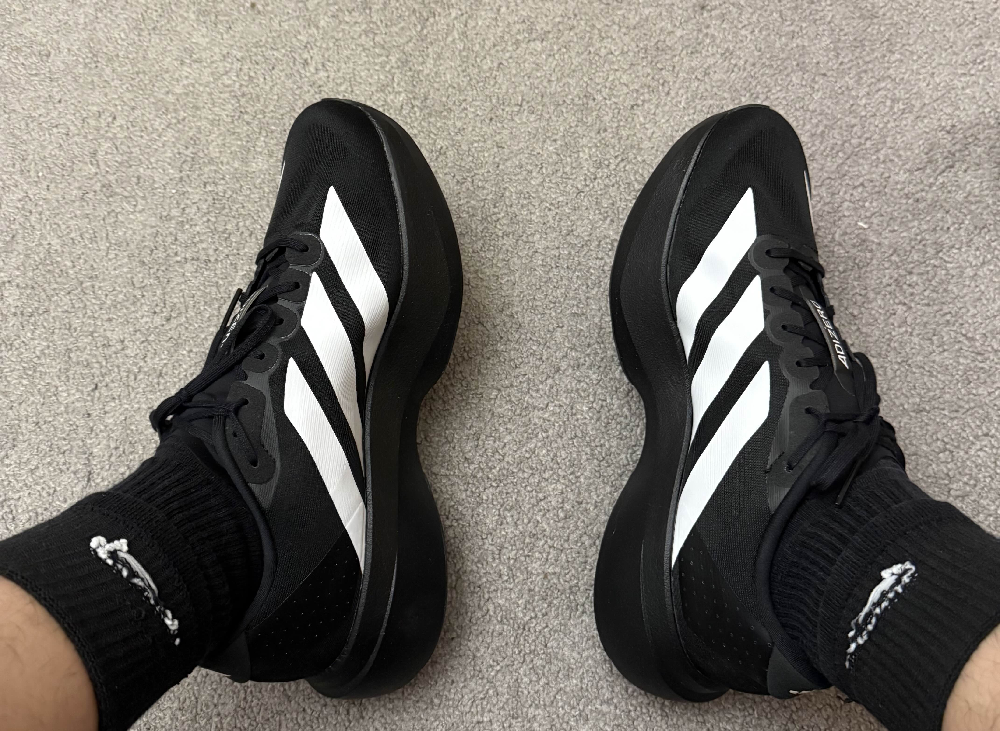

Running shoes are definitely the most important purchase when it comes to running. There are many different types of running shoes, but for beginners, you'd probably want a daily trainer, a shoe that you can use for a variety of runs. I had two in mind: either the Asics Novablast 5 or the Adidas EVO SL. I initially went with the Asics, but the shoe ended up being too wide. So, I went with the Adidas and they ended up being great.
I've had a handful of runs with them so far, and I like them. They're lightweight, have good cushioning, and look good. The price was a little high considering it's for a hobby that I've just started. But I think they're worth it because, for one, they'll last longer and prevent injuries better, and for two, I find it easier to commit to things when I've spent money on them. So, I think I'll be more consistent with running because I don't want my money to go to waste.
This is an optional purchase, but I thought it would be nice to have. I went with the Apple Watch SE 2. I got lucky and was able to get it half off. It does everything that I need it to, especially heart rate tracking. It's not the most accurate, especially when it comes to indoor runs. The treadmill would say a speed, and the watch would say a completely different pace. It also tracks cadence, not sure if it's accurate, but it's useful to have. It's light and comfortable. I've worn it for the past two weeks, and sometimes I don't even realize that I have it on. The run tracker is pretty useful; they have a handful of metrics that are pretty interesting to see such as elevation and power. Below you can see a table of pros and cons.
| Pros | Cons |
| Accurate Heart Rate Monitoring | Short Battery Life |
| Affordable compared to Series models | No Always-On Display |
| Fast performance with S8 chip | No ECG or Blood Oxygen sensor |
| Crash Detection and Fall Detection | Battery needs daily charging with heavy use |
| Good fitness and workout tracking | Limited to Apple ecosystem (iPhone required) |
| Lightweight and comfortable design | No advanced health sensors from higher models |